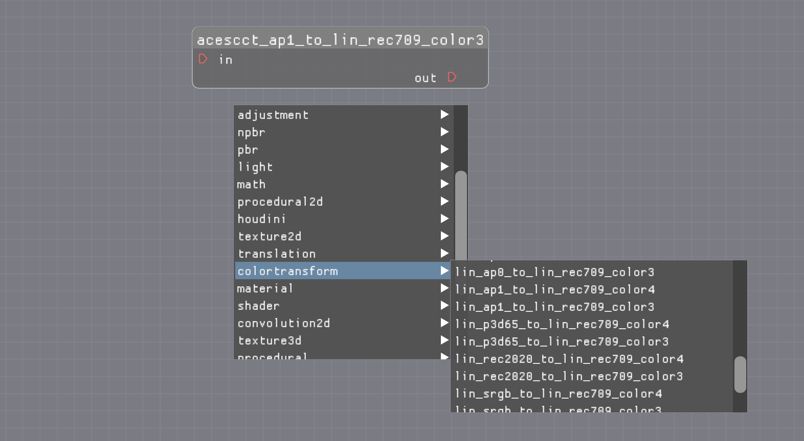

MaterialX and OpenColorIO
Introduction
MaterialX code generation currently supports a "default" set of color space transforms via it's "default color management" mechanism.
This includes a subset of those specified by the AcesCg (Academy Color Encoding System Color
Grading) configuration which is included by default with OpenColorIO (OCIO) (as of version 2.2).
The current colorspace attribute which can be used on color3 and color4 inputs as well as
file name inputs matches either a color space name or one of it's aliases as defined in the AcesCg
configuration.
Additionally, there are node definitions which can be used to specify the color space transform to be used for a given input. They are named as follows:
<source_colorspace>_to_<target_colorspace>
where source_colorspace is the source and target_colorspace is the target color
space.
These are hard-coded and are do not actually reference any config file for correctness.
Code Generation Support
Support entails providing implementation of color space transforms either as shader source code or as functional node graphs. ( The latter available as of MaterialX 1.38.6 ).
MaterialX code generation allows for the insertion of color space transform code during generation when
it encounters colorspace attributes.
Integrations
Insertion is more suitable for hardware renderers that for software renderers, as they will tend to perform the color space transform itself such as pre-transforming input images using the OpenImageIO library (which can include OpenColorIO support).
An example are renderers which consume the OSL shading language. In this case code
generation simply passes the colorspace information onwards as meta-data within the shader
code.
As noted not all color space transforms are specified within MaterialX, so
if a colorspace attribute is specified which is not supported then the
integration needs to handle such cases appropriately. For instance a USD HDStorm render
delegate could use `OpenImageIO`` to perform these transforms, while using code generation for those that
are supported.
OpenColorIO for MaterialX Transform Creation
Below is a diagram of a possible workflow to generate MaterialX color space transforms using the OpenColorIO API.

The top portion (green boxes) shows the path for source code implementations while the middle left boxes represent the path for functional graph implementations.
Common to both is that the definition interfaces (nodedefs) are the same.
Source Code Generation
Source code can be generated by OCIO, which can then be used to create appropriate MaterialX nodes
definitions. This is demonstrated in the
OCIO notebook.
A standalone Python utility is also provided in the here. The results of running this utility are provided here.
Below is a screenshot of definitions being available in MaterialX Graph Editor,
though the definitions could be used for any integration.

Some generation issues of note include:
- Reliance on texture lookups for color space transforms. Though it's possible to support the current color management system in MaterialX would need to have custom logic added. Additionally reliance on these lookups reduces portability to mobile and web platforms.
- The export of a single block of source code. If this is a single function then reuse is not an issue, but secondary functions may be added which could be duplications.
- Lack of support for code generation backends supported by MaterialX such as NVIDIA
MDLand current versions ofOSL.
Functional Graph Generation
From a MaterialX perspective implementing color space transforms as a set of node graphs is the most portable and maintainable approach.
As graphs, there is no need to write implementations for new code generation backends, and integrations
which do not use code generation (such as VEX or Unreal) can just map their
existing implementations of the nodes used to compose the graph.
This is still an area of discussion and investigation.